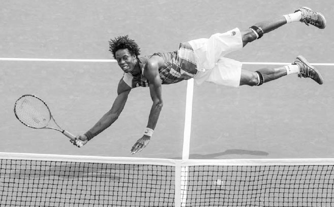
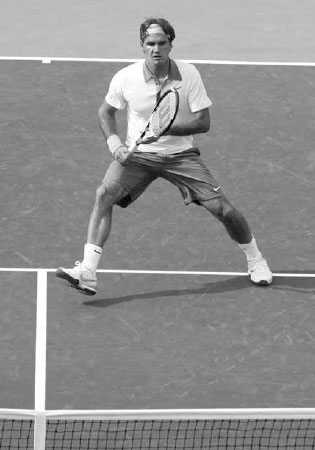
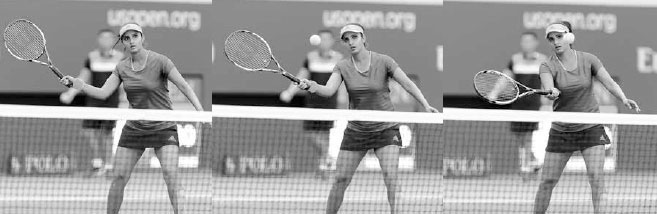

Đánh bóng bổng (Volley) — Chốt điểm tại lưới¶
Một cú vô lê tốt đặc biệt quan trọng ở trình độ nghiệp dư vì hầu hết người chơi thi đấu đôi. Trong đánh đôi, khi đồng đội của bạn giao bóng hoặc đỡ giao bóng --- khoảng một nửa số điểm bóng --- bạn thường đứng gần lưới và thực hiện các cú vô lê. Nếu thêm vào đó, bạn lập tức tiến lên vị trí lưới sau khi giao bóng hoặc đỡ giao bóng, thì vô lê có thể chiếm hơn một nửa tổng số cú đánh của bạn. Và dù đánh từ cuối sân là lối chơi phổ biến nhất trong đánh đơn, khả năng tiếp cận lưới mang lại cho người chơi đơn nhiều lựa chọn chiến thuật hơn. Ví dụ, nếu bạn không đôi công tốt bằng đối phương từ cuối sân, việc lao lên lưới có thể nghiêng cán cân về phía bạn và giúp bạn thắng. Ngoài ra, việc tấn công lưới hiệu quả thường khiến đối phương mắc lỗi bằng cách buộc họ phải đánh bóng sâu hơn để giữ bạn xa lưới, và thấp hơn, nhanh hơn khi bạn đã vào vị trí ở lưới.

Gaël Monfils thể hiện sự khéo léo thể thao đôi khi cần thiết để bao quát lưới tốt.
Khi bạn đã vào vị trí ở lưới, pha bóng trở thành một tình huống căng thẳng, sống còn, nơi thắng hay thua điểm có thể xảy ra trong tích tắc. Thái độ của bạn phải phản ánh điều này, và lối chơi của bạn ở lưới nên quyết liệt và chủ động.
Ngoài ra, tiếp xúc bóng trên cú vô lê xảy ra ở nhiều độ cao khác nhau với rất ít thời gian để vào vị trí, nên bạn thường phải ứng biến bằng cách khuỵu gối và lao người để bao quát sân (hình trên) và đạt được sự cân bằng cần thiết để đánh một cú vô lê tốt. Dù đây là một cú đánh thú vị và đòi hỏi thể thao, nó cũng là một cú đánh mang tính tấn công. Vô lê được thực hiện trong \"vùng đèn xanh\" của sân, tức là khu vực để đánh những cú ăn điểm. Tính tấn công này có thể mang lại nhiều niềm vui. Với tôi, ít có khoảnh khắc nào trên sân thú vị hơn việc kết nối một chuỗi các cú đánh nền mạnh mẽ rồi kết thúc điểm bóng bằng một cú vô lê ăn điểm. Trong chương này, trước khi giải thích chi tiết kỹ thuật vung vợt trên cú vô lê thuận tay và trái tay, cũng như cú vô lê có đà vung, vô lê bỏ nhỏ, vô lê nửa nảy, và cú giao bóng cao, tôi sẽ bàn trước về những khía cạnh quan trọng khác của cú vô lê: cách cầm vợt, tư thế sẵn sàng, bộ pháp chân, tiếp xúc bóng, và độ chặt của tay cầm.
I. Những Khía Cạnh Quan Trọng Của Cú Vô Lê¶
1. CÁCH CẦM VỢT¶
Cách cầm continental nên được dùng trên cả cú vô lê thuận tay và trái tay vì nhiều lý do. Thứ nhất, nếu dùng cách cầm continental, bạn sẽ không bị lỡ nhịp giữa các lần đổi cách cầm trong những pha đối đáp nhanh ở lưới. Thứ hai, cách cầm continental tự nhiên mở mặt vợt để tạo hiệu ứng \"nâng đỡ\" cần thiết nhằm hóa giải lực va chạm của bóng và nâng bóng thoải mái trên những cú vô lê thấp. Thứ ba, nó giúp tạo xoáy ngược để kiểm soát tốt hơn trên những cú vô lê tinh tế. Thứ tư, nó đặt cổ tay vào vị trí cho phép bạn đánh trả những cú vô lê rộng, khó khăn vào sân theo cách mà các cách cầm khác không thể làm được.
Ngoại lệ khi dùng cách cầm continental trên cú vô lê là với những quả bóng cao hoặc chậm. Ở đó bạn nên dùng cách cầm eastern. Cách cầm eastern tạo vị trí tay mạnh mẽ hơn, giúp dễ dàng đánh một cú vô lê ăn điểm trên những quả bóng chậm hoặc cao hơn vai. Những quả bóng cao di chuyển chậm, cho bạn thời gian để thực hiện thay đổi nhỏ từ cách cầm continental sang cách cầm eastern thuận tay hoặc eastern trái tay.
2. TƯ THẾ SẴN SÀNG¶
Tư thế sẵn sàng cho cú vô lê hơi khác so với tư thế sẵn sàng ở cuối sân. Vợt nên ở cao hơn một chút và xa hơn về phía trước thân người. Hãy nhớ không siết chặt tay cầm quá mức. Sự linh hoạt rất quan trọng ở lưới, và khi cơ tay và vai căng cứng, việc di chuyển thân người và vợt nhanh sẽ khó khăn hơn.
Ngoài ra, so với tư thế sẵn sàng ở cuối sân, thân người bạn nên ở tư thế khuỵu thấp hơn, đạt được bằng cách gập gối và mở rộng tư thế đứng (hình phải). Vị trí thân người thấp hơn này hạ trọng tâm của bạn và giúp di chuyển nhanh hơn. Hãy quan sát những tay vợt vô lê giỏi nhất ở lưới. Họ bao quát sân với những chuyển động linh hoạt như mèo, giữ thấp gần mặt đất trong tư thế khuỵu cho phép họ di chuyển nhanh và vô lê với sự cân bằng vượt trội. Vị trí thân người thấp hơn cũng đưa tầm nhìn của bạn gần hơn với độ cao của bóng đến, cải thiện khả năng đọc quỹ đạo bóng.

Trong tư thế sẵn sàng ở lưới, Ekaterina Makarova hạ thấp thân người, thiết lập tư thế đứng rộng, và giữ hai tay cao và hẳn về phía trước thân người.
Bước tách chân cũng đóng vai trò quan trọng trong tư thế sẵn sàng ở lưới, nơi thời gian là điều quý giá. Chỉ khi thực hiện bước tách chân, bạn mới có thể có bước chân đầu tiên dứt khoát, và vì bạn thường di chuyển tấn công về phía trước từ cuối sân để vô lê, bước tách chân là cần thiết để dừng đà tiến và di chuyển nhanh theo nhiều hướng khác nhau.
3. BỘ PHÁP CHÂN¶
Cánh tay di chuyển rất ít trên cú vô lê. Người ta nói cú vô lê được \"đánh bằng chân,\" nghĩa là đôi chân đóng vai trò then chốt trong việc tạo sức mạnh, sự cân bằng, và vị trí đứng sân để thắng điểm ở lưới.

Federer đẩy người về phía trước bằng chân để tăng lực cho cú vô lê này.
A. SỨC MẠNH¶
Trên cú vô lê, sức mạnh tăng thêm có thể được tạo ra bằng cách đẩy bằng chân sau trong khi bước chân trước về phía trước, cho phép trọng lượng cơ thể di chuyển trôi chảy qua cú đánh. Năm 2014, không lâu sau khi Roger Federer chuyển sang huấn luyện viên mới Stefan Edberg, các cú vô lê của anh được cải thiện. Edberg, bản thân là một tay vợt vô lê xuất sắc, đã huấn luyện Federer bớt phụ thuộc vào tay và tăng lực cho các cú vô lê bằng cách đẩy mạnh hơn bằng chân (hình trên).
Đôi chân của bạn cũng có thể hạ thấp thân người để tăng lực cho cú vô lê. Gập gối cho phép bạn nghiêng đầu vợt lên nhiều hơn và đặt cổ tay, khuỷu tay vào vị trí mạnh mẽ hơn về mặt sinh lý. Với sự thật sinh lý này trong đầu, nếu bóng cao ngang eo, bạn nên khuỵu người xuống và nghiêng đầu vợt trên cổ tay ở góc khoảng 10 giờ. Bằng cách hạ thấp thân người, bạn có thể biến một cú vô lê cao ngang bụng thành một cú vô lê dễ hơn, ngang ngực. Với một quả bóng cao từ eo đến gối, hãy khuỵu người xuống và cố giữ đầu vợt ngang khi tiếp xúc (hình đối diện). Nếu bóng đến thấp hơn gối, hãy khuỵu người thấp hơn để đánh cú vô lê này.
B. SỰ CÂN BẰNG¶
Dùng đôi chân để vào đúng vị trí với bóng sẽ giúp bạn đánh một cú đánh cân bằng; đứng quá xa về bên trái, bên phải, phía trước, hoặc phía sau bóng sẽ ảnh hưởng xấu đến sự cân bằng và làm hỏng cú đánh.
Nếu bạn phải đánh một cú vô lê thấp, hãy kéo dài bước tiến và mở rộng tư thế đứng để giữ trọng tâm giữa hai chân và thân người cân bằng. Gập gối --- chứ không phải gập eo --- cũng rất quan trọng để cân bằng trên những quả bóng thấp hơn, vì nó giữ vai ngang bằng hơn và đầu thẳng đứng (trang kế). Nếu bạn không gập gối, vai và đầu của bạn sẽ nghiêng và khiến thân người chao đảo.
C. VỊ TRÍ ĐỨNG SÂN¶
Trên cú vô lê, điều quan trọng là di chuyển về phía trước nhanh chóng, đón bóng càng gần lưới càng tốt, và đạt vị trí đứng sân tốt. Làm được điều này sẽ dẫn đến bốn kết quả tích cực. Nó sẽ: Thứ nhất, cho đối phương ít thời gian hơn để phản ứng với cú đánh của bạn. Thứ hai, khiến các góc độ khả dụng cho cú vô lê của bạn lớn hơn. Thứ ba, cho phép bạn đánh bóng ở điểm tiếp xúc cao hơn. Thứ tư, tạo áp lực buộc đối phương phải đánh passing shot thấp hơn, gây thêm nhiều lỗi.
HỘP HUẤN LUYỆN VIÊN: Hãy thử một bài kiểm tra sức mạnh nhanh với một người bạn. Yêu cầu họ nghiêng vợt lên 45 độ so với mặt phẳng ngang rồi kháng lại lực tay bạn đẩy đầu vợt của họ ra sau. Sau đó làm tương tự với đầu vợt nghiêng 45 độ dưới mặt phẳng ngang. Bạn sẽ thấy bạn mình có thể kháng lại lực đẩy của bạn tốt hơn khi đầu vợt hướng lên. Với điều này trong đầu, trừ khi bóng thấp, hãy cố giữ đầu vợt trên mặt phẳng ngang để xử lý tốt nhất lực va chạm mạnh của cú vô lê.
Đôi khi tôi thấy người chơi đứng cứng chân khi đánh vô lê. Kết quả là, họ đánh các cú vô lê với sức mạnh, sự cân bằng, và vị trí đứng sân không tối ưu. Để tránh điều này, trước tiên bạn phải luôn thực hiện bước tách chân rồi theo trình tự bộ pháp chân sau: xoay chân ngoài theo hướng bạn cần di chuyển, sau đó di chuyển về phía trước để tiếp xúc bóng càng gần lưới càng tốt, và cuối cùng, bước chân trong đúng thời điểm và đúng hướng. Hãy bàn chi tiết hơn.
I. XOAY CHÂN NGOÀI¶
Chuyển động chân đầu tiên sau bước tách chân thường được thực hiện bằng chân ngoài, xoay từ vuông góc với lưới sang gần như song song với lưới. Trên cú vô lê thuận tay, chân phải xoay sang phải (hình đối diện, trái) và, nếu có thời gian, di chuyển nửa bước sang phải. Cú xoay và bước ban đầu này của chân phải giúp đầu gối hướng về phía bạn muốn di chuyển.
Vì cùng lý do, chuyển động chân đầu tiên trên cú vô lê trái tay sau bước tách chân là chân trái xoay sang trái.

Bằng cách gập gối, Marin Cilic giữ đầu thẳng đứng và vai ngang bằng để kiểm soát vợt tốt hơn.
II. DI CHUYỂN VỀ PHÍA TRƯỚC¶
Bộ pháp chân sau cú xoay ban đầu sẽ phụ thuộc vào tốc độ bóng đến. Nếu bóng chậm, có thể có nhiều bước tiến sau cú xoay, trong khi với bóng nhanh có thể chỉ có thời gian cho cú xoay.
III. BƯỚC BẰNG CHÂN TRONG¶
Sau khi xoay bằng chân ngoài và di chuyển về phía trước, hãy căn thời gian cú vung vô lê với việc chân trong bước về phía trước vào cú đánh. Chân trái của bạn sẽ bước về phía trước khi đánh vô lê thuận tay, và chân phải làm vậy khi đánh vô lê trái tay (hình trên).
Chân trước của bạn sẽ chạm đất ở những thời điểm khác nhau và với mức độ quyết liệt khác nhau, phần lớn tùy theo tốc độ bóng đến. Trên hầu hết các quả bóng, chân bạn chạm đất một khoảnh khắc sau khi bạn tiếp xúc bóng --- trọng lượng của bạn sẽ chuyển qua cú đánh tốt nhất nếu chân bạn hơi rời khỏi mặt đất tại thời điểm tiếp xúc. Hãy nhớ tránh dừng đột ngột sau khi đánh bóng vì nó sẽ giật thân trên về phía trước và ảnh hưởng đến sự cân bằng của bạn. Thay vào đó, hãy cố lướt vào cú vô lê giống như một chiếc xe từ từ giảm tốc đến biển báo dừng, thay vì một chiếc xe phanh gấp khẩn cấp.
Để có thêm sức mạnh từ đôi chân trên những quả bóng chậm, chân trước của bạn nên chạm đất muộn hơn và quyết liệt hơn. Khi nhận một quả bóng chậm, hãy bước vài bước về phía trước để đón bóng, rồi đẩy mạnh bằng chân sau, nhấc chân trước lên không trong lúc vung vợt ra sau, và di chuyển qua cú đánh (hình phải). Sau khi chân trước chạm đất, chân sau của bạn sẽ đá ngược ra sau để giữ thăng bằng.

Sau bước tách chân, Federer xoay chân phải để hỗ trợ di chuyển nhanh sang phải, thực hiện cú vô lê thuận tay.
Vì vị trí của bóng luôn thay đổi, hướng bước chân trước của bạn cũng sẽ thay đổi. Bộ pháp chân của bạn cần nhẹ nhàng và linh hoạt. Có ba bước tiến chính trên cú vô lê mà tôi sẽ mô tả bằng mặt đồng hồ: Bước Thẳng: Bước thẳng nên được dùng với những quả bóng đến thoải mái ở khoảng 60 đến 90cm về một bên thân người. Trên cú vô lê này, chân trái bước giữa vị trí 12 giờ và một giờ trên cú thuận tay, và chân phải giữa vị trí 12 giờ và 11 giờ trên cú trái tay (hình trái). Nếu có thời gian, hãy di chuyển chân để vào tư thế này, vì nó giúp xoay vai và đặt chân vào vị trí tốt để đẩy về phía trước vào cú đánh.

Stan Wawrinka chạm đất mạnh mẽ sau khi tiếp xúc để vô lê quyết liệt một quả bóng chậm.
BƯỚC THẲNG BƯỚC LAO BƯỚC LÙI
HỘP HUẤN LUYỆN VIÊN: Một vấn đề thường gặp tôi thấy trên các sân là người chơi bị \"đứng chôn chân\" ở lưới trong đánh đôi, làm hỏng sức mạnh, sự cân bằng, và vị trí đứng sân trên các cú vô lê của họ. Để giúp học trò \"trôi chảy\" trên các cú vô lê, tôi hướng dẫn họ tưởng tượng mình đang đứng trên cát ở bãi biển yêu thích vào một ngày nóng khi chơi ở lưới. Không ai thích giữ chân trên cát nóng quá lâu. Tôi thấy hình ảnh này giúp người chơi luôn chuyển động trong pha bóng và cải thiện lối chơi lưới của họ. Khi điểm bóng kết thúc, tâm trí bạn có thể chuyển vị trí đôi chân từ cát sang làn nước biển mát mẻ.
Bước Lao: Bước lao được dùng với những quả bóng rộng hơn. Trên cú vô lê này, chân trái bước giữa vị trí hai giờ và ba giờ trên cú thuận tay, và chân phải giữa vị trí chín giờ và 10 giờ trên cú trái tay (hình giữa). Khi dùng bước lao, cần có đôi chân khỏe và sự cân bằng vượt trội để giữ thấp và kiểm soát trọng tâm. Trọng tâm thấp sẽ giúp bạn dừng lại và hồi vị nhanh chóng cho cú đánh tiếp theo.
Bước Lùi: Đôi khi bóng sẽ được đánh nhanh ngay vào người bạn và chỉ có thời gian để chân trước bước lùi tránh xa bóng và hoàn tất cú đánh ở tư thế bán mở. Trong hoàn cảnh này, chân trái của bạn sẽ bước giữa vị trí chín giờ và 10 giờ trên cú thuận tay, và chân phải giữa vị trí một giờ và hai giờ trên cú trái tay (hình phải). Chuyển động tránh xa bóng này sẽ cho bạn không gian và đủ chỗ cho cánh tay vung vợt thoải mái với vai ngang bằng và thân người cân bằng.
4. TIẾP XÚC BÓNG¶
Khi đã di chuyển chân để đạt sức mạnh, sự cân bằng, và vị trí tốt, hãy tiếp xúc bóng chắc chắn phía trước thân người (hình trên). Thời điểm và vị trí bạn tiếp xúc bóng là yếu tố then chốt của cú vô lê. Nếu bạn đánh bóng quá muộn, bạn sẽ đánh ở một vị trí yếu về mặt thể chất, trong khi nếu tiếp xúc quá sớm, bạn sẽ mất kiểm soát. Tiếp xúc quá gần hoặc quá xa thân người đều gây hại như nhau.
Stefan Edberg tiếp xúc bóng phía trước thân người trên cú vô lê trái tay này.
5. ĐỘ CHẶT CỦA TAY CẦM¶
Bạn nên cầm vợt chặt đến mức nào tại thời điểm tiếp xúc? Bạn sẽ thường nghe các huấn luyện viên khuyên người chơi siết chặt tay cầm và \"đấm\" cú vô lê. Đây là lời khuyên tốt đôi khi, nhưng không phải lúc nào cũng vậy. \"Đấm\" là từ đúng theo nghĩa cú vô lê thường là một chuyển động ngắn, sắc gọn, nhưng không nên hiểu theo nghĩa đen mọi lúc. Sẽ có lúc khi nhận một cú đánh nhanh, bạn muốn bóng rời khỏi vợt bạn với tốc độ chậm hơn khi nó đến, hoặc những lúc khác cần một cú vô lê nhẹ nhàng, ngắn hơn. Trong những tình huống này, kỹ thuật đúng là \"hấp thụ\" bóng thay vì đấm xuyên qua. \"Đấm\" bóng phù hợp hơn khi bạn đang tấn công một quả bóng đến chậm hơn và mục tiêu của bạn là tăng tốc độ bóng.
Có ba kiểu tiếp xúc bóng chính trên cú vô lê: búa, bắt, và phanh. Với mỗi kiểu, tay cầm được điều chỉnh khác nhau. Nói chung, với một quả bóng chậm hoặc cao bạn sẽ \"đóng búa\" vào lực va chạm với tay cầm chặt (trang kế, trên); với tốc độ vừa phải hoặc bóng thấp bạn sẽ \"bắt\" lực va chạm với tay cầm vững (trang kế, dưới); và với một quả bóng nhanh bạn sẽ \"phanh\" khi va chạm bằng cách dùng tay cầm hấp thụ lực.
Trong đánh đôi, bạn sẽ dùng ba kiểu vô lê này thường xuyên và thường theo cách lặp lại. Ví dụ, khi chặn bóng quyết liệt ở lưới, bạn sẽ \"đóng búa\" vào cú vô lê. Khi đánh một cú vô lê thấp, bạn sẽ \"bắt\" cú vô lê và nhắm cú đánh một cách thận trọng vào khu vực an toàn của sân. Hoặc, khi bóng được bắn thẳng vào bạn ở vị trí lưới, vợt của bạn nên \"phanh\" tại thời điểm tiếp xúc để hấp thụ tốc độ cao của bóng. Những tay vợt đánh đôi giỏi có khả năng điều chỉnh mặt vợt theo những cách khác nhau này và điều chỉnh độ chặt tay cầm cùng độ dài cú vung để đánh tốt nhất nhiều loại cú đánh khác nhau.
Những nguyên tắc bàn ở trên về cách cầm vợt, tư thế sẵn sàng, bộ pháp chân, và độ chặt tay cầm áp dụng cho cả cú vô lê thuận tay và trái tay, nhưng vì vai đánh bóng trễ lại trên cú thuận tay và dẫn trước trên cú trái tay, có những khác biệt về kỹ thuật. Trong hai phần tiếp theo, tôi sẽ giải thích kỹ thuật vô lê thuận tay và trái tay.

Maria Sharapova kéo dài vung vợt ra sau và \"đóng búa\" vào tiếp xúc trên quả bóng cao, chậm này.
Ngược lại, trên quả bóng thấp này, cô rút ngắn vung vợt ra sau và \"bắt\" lấy tiếp xúc.
Cú vô lê thuận tay của Sania Mirza cho thấy cô mở và đặt đầu vợt trên bóng rồi đưa vợt về phía trước theo một độ dốc nhẹ từ cao xuống thấp.
II. Cú Vô Lê Thuận Tay¶
TRÊN CÚ VÔ LÊ THUẬN TAY, phản ứng đầu tiên của bạn là di chuyển tay và vai như một khối sang phải để hỗ trợ cú xoay vai và giúp đưa đầu vợt vào đúng vị trí. Trên hầu hết các cú vô lê thuận tay, vai của bạn nên xoay khoảng 45 độ so với lưới và đầu vợt nên đặt hơi cao hơn và phía sau đường bay của bóng đến (hình trên).
Cần nhớ, trong khi các cú vung đánh nền thường xoay vòng và tạo cung, cú vô lê là một cú đánh nhanh hơn nhiều, đòi hỏi vợt di chuyển theo đường thẳng trong lúc chuẩn bị và vung.
Việc chuẩn bị cho cú vô lê bao gồm một cú vung vợt ra sau ngắn. Bạn có thể có tất cả sức mạnh cần thiết trên cú vô lê với một cú vung gọn gàng, và độ chính xác cùng sự ổn định của bạn sẽ tốt hơn khi tuân thủ một chuyển động ngắn có kỷ luật. Tất nhiên, độ dài của vung vợt ra sau sẽ thay đổi tùy tình huống, nhưng trên hầu hết các cú vô lê nó vào khoảng 30 đến 60cm. Nếu quả bóng bạn đang vô lê được đánh đến bạn với tốc độ chậm, vung vợt ra sau của bạn sẽ dài hơn (hình đối diện, trên). Nếu bóng thấp hoặc nhanh, nó có thể ngắn hơn (hình đối diện, dưới). Khi vợt di chuyển vào cuối giai đoạn vung ra sau, cánh tay và vợt của bạn nên tạo thành hình chữ U (hình dưới), trong đó cẳng tay là đáy chữ U với cánh tay trên và vợt tạo thành hai cạnh của chữ U. Việc chuẩn bị hình chữ U giúp giữ cú vung gọn gàng và vợt trong tầm nhìn của bạn. Nếu bạn mất tầm nhìn với vợt, bạn cũng sẽ mất hình chữ U ở cánh tay và thực hiện một cú vung ra sau quá lớn.
Aisam-ul-Haq Qureshi chuẩn bị với vợt và cánh tay tạo thành hình chữ U.
Để nhắc học trò về vị trí cổ tay đúng trên cú vô lê, đôi khi tôi yêu cầu họ nắm cao lên trên chuôi vợt và quan sát vị trí tay cầm sau khi đánh bóng. Tay cầm nên kết thúc ở một khoảng cách đáng kể so với cẳng tay.

Nadal ngả cổ tay ra sau để tạo vị trí đòn bẩy trên cú vô lê thuận tay này.
Khi chuẩn bị cánh tay và vợt theo hình chữ U, hãy nhớ giữ khuỷu tay gần thân người và phía trước vai. Điều này tự nhiên ngả cổ tay ra sau và đặt đế vợt hơi phía trước dây vợt (hình dưới). Bằng cách đặt đế vợt phía trước dây vợt, bạn tạo ra hiệu ứng đòn bẩy mạnh mẽ, trong đó một chuyển động nhỏ của tay tạo ra một chuyển động lớn hơn nhiều của đầu vợt. Điều này tạo tốc độ vợt nhanh, giúp đảm bảo tiếp xúc xảy ra phía trước thân người, và tạo vị trí cổ tay thoải mái để đưa đầu vợt về phía mục tiêu, tăng độ chính xác.
Một vấn đề thường gặp ở trình độ nghiệp dư là người chơi đưa khuỷu tay sang phải trong lúc chuẩn bị, đặt khuỷu tay ra sau vai. Vị trí khuỷu tay sai này làm giảm hiệu ứng đòn bẩy và tăng khả năng tạo ra điểm tiếp xúc muộn cùng đường vung đi ngang qua thân người thay vì hướng về mục tiêu.
Sau khi hoàn tất vung vợt ra sau, để đánh bóng, hãy đưa khuỷu tay về phía trước, giữ cổ tay chắc, và đẩy vợt về phía trước và xuống theo một góc nhẹ từ cao xuống thấp. Đường đi của vợt cũng hơi hướng xuống cũng như từ phải sang trái (hay ngoài vào trong), đưa đế vợt xuống về phía thân người. Trên một quả bóng cao ngang ngực điển hình, đầu vợt sẽ ở góc khoảng 45 độ và xoay xuống ngang bằng tại thời điểm tiếp xúc. Nếu bóng đặc biệt nhanh, cao, hoặc thấp, hoặc nếu bạn đứng gần lưới, đầu vợt sẽ xoay ít hơn.
Đẩy bằng vai để giữ hình chữ U trong cú vung về phía trước. Điều này sẽ giữ khuỷu tay hơi gập, tối ưu hóa sức mạnh thể chất cần thiết để ổn định vợt khi va chạm với bóng. Vì bóng được đánh trên không, cú vô lê có lực va chạm bóng mạnh nhất trong tất cả các cú đánh. Vì lý do này, điều quan trọng là \"đạt được và giữ vững\" hình dạng cánh tay trên cú vô lê thuận tay và thực hiện cú đánh bằng cách dùng thân người như một khối thống nhất.
Sau khi tiếp xúc, Sorana Cirstea kết thúc cú vô lê với lòng bàn tay hướng về mục tiêu.
Khi tiếp xúc bóng, hãy giữ đầu đứng yên và xoay ngang hướng về cột lưới bên phải với mắt nhìn vào mặt sau dây vợt. Xoay đầu theo cách này không chỉ giúp căn chỉnh hông đúng, mà còn hỗ trợ sự tập trung, tăng khả năng bạn đánh bóng gọn gàng. Ngoài ra, hãy hơi nghiêng người về phía trước khi đánh bóng; đẩy ngực theo hướng tương tự với vợt sẽ tăng lực cho cú đánh của bạn. Sau khi tiếp xúc, lòng bàn tay của bạn nên hướng về phía trước, đối diện mục tiêu (hình trái). Trừ khi bạn nhận một quả bóng đến rất chậm, hãy tránh vung ngang qua thân người và kết thúc với vợt ở cùng phía thân người nơi cú vung bắt đầu.
HỘP HUẤN LUYỆN VIÊN: Như đã đề cập trước đó trong chương, đánh đôi chiếm ưu thế trong lối chơi nghiệp dư và khả năng vô lê tốt là yếu tố then chốt trong đánh đôi. Điều quan trọng cần lưu ý là kỹ thuật vợt đơn giản, ngắn gọn của cú vô lê là nền tảng cho nhiều cú đánh quan trọng trong đánh đôi, bao gồm cú bỏ nhỏ, cú tạt bóng bổng, và tất cả các cú thuận tay cắt được dùng khi bị dồn ép về thời gian hoặc khi cố giữ bóng thấp ở chân đối phương. Thật vậy, nếu bạn có thể học được vị trí vợt và khuỷu tay đúng trên cú vô lê thuận tay, bạn sẽ thực hiện tốt nhiều cú đánh và chơi tốt một phần lớn trong đánh đôi (và một phần nhỏ trong đánh đơn).
III. Cú Vô Lê Trái Tay¶
CÚ VÔ LÊ TRÁI TAY tuân theo nhiều nguyên tắc giống cú vô lê thuận tay, nhưng có bốn khác biệt chính về kỹ thuật. Thứ nhất, vai đánh bóng nên giữ ổn định hơn và cánh tay đánh bóng duỗi thẳng thường xuyên hơn. Điều này tạo ra một cú vung hơi dài hơn. Thứ hai, vì cách các cơ cánh tay căn chỉnh với vợt, cú vô lê trái tay dùng mặt vợt mở hơn một chút và vung vợt ra sau dài hơn. Mặt vợt mở sẽ tạo ra độ dốc lớn hơn một chút trên cú vung về phía trước so với thường thấy trên cú vô lê thuận tay. Điều quan trọng là nhận ra sự khác biệt về độ dốc giữa hai cú vô lê này; nếu bạn áp dụng cùng đường cong vung cho cả hai cú đánh, bạn có thể tạo ra một cú vung quá phẳng trên cú vô lê trái tay hoặc một độ dốc quá gắt trên cú vô lê thuận tay. Thứ ba, vai nên xoay nhiều hơn. Thứ tư, điểm tiếp xúc nên xảy ra xa hơn về phía trước thân người.
HỘP HUẤN LUYỆN VIÊN: Với người chơi nghiệp dư gặp khó khăn với cú vô lê trái tay một tay, cú vô lê trái tay hai tay có thể là một lựa chọn khả thi. Bàn tay phụ trên vợt có thể khắc phục vấn đề cách cầm, giữ cú vung gọn gàng, và ổn định vợt tốt hơn khi va chạm bóng. Nếu thử lựa chọn này, tôi khuyên nên đánh bóng với hai tay trên chuôi vợt rồi thả tay trái ra ngay sau khi tiếp xúc, như cựu tay vợt số một thế giới Martina Hingis làm dưới đây.
Chuyển động đầu tiên của thân trên trên cú vô lê trái tay là xoay vai hơi quá vuông góc với lưới, với tay phải hơi gập và tay trái đỡ cổ vợt (hình dưới). Đầu vợt nên mở và đặt hơi cao hơn, phía sau đường bay của bóng đến. Độ dài của vung vợt ra sau sẽ thay đổi, nhưng trên hầu hết các cú vô lê trái tay, đầu vợt nên thẳng hàng với vai trái. Ở cuối giai đoạn vung ra sau, cánh tay và vợt nên tạo hình chữ U, và cẳng tay cùng vợt nên tạo hình chữ L (hình trên trái).
Stefan Edberg vào tư thế cho cú vô lê trái tay này bằng cách xoay vai và đỡ cổ vợt bằng tay trái.
Federer đặt đầu vợt lên trên bóng với khuỷu tay hơi gập (trái). Khuỷu tay anh duỗi thẳng khi vợt di chuyển về phía trước để gặp bóng, và tay trái anh di chuyển ra sau để giữ thăng bằng và giữ vợt trên đường thẳng đến mục tiêu (phải).
Với vung vợt ra sau đã hoàn tất, hãy đẩy vợt về phía trước và xuống bằng vai với cổ tay chắc chắn. Tay phải của bạn --- vốn hơi gập trong lúc vung ra sau --- nên duỗi thẳng, và tay trái di chuyển ra sau (hình trên phải) để giữ thăng bằng và giữ vợt trên đường thẳng đến mục tiêu.
Trên một quả bóng cao ngang ngực điển hình, đầu vợt sẽ ở góc khoảng 75 độ và xoay xuống ngang bằng tại thời điểm tiếp xúc. Nếu bóng đặc biệt nhanh, cao, hoặc thấp, hoặc nếu bạn đứng gần lưới, đầu vợt sẽ xoay ít hơn. Mặt vợt vốn mở trong lúc vung ra sau nên gần như vuông góc tại thời điểm tiếp xúc. Tất nhiên, độ mở của vợt tại thời điểm tiếp xúc sẽ thay đổi tùy theo độ cao bóng và ý đồ cú đánh.

Kei Nishikori xoay đầu để nhìn qua mặt sau dây vợt tại thời điểm tiếp xúc.
Sau khi tiếp xúc, đầu bạn nên xoay về phía cột lưới bên trái với mắt vẫn nhìn vào điểm tiếp xúc (trang trước, dưới). Kết thúc với vợt ở phía bên đánh bóng và hẳn về phía trước thân người. Kết thúc theo cách này cho thấy bạn đã dồn lực xuyên qua bóng bằng cách đẩy vai, và tiếp xúc đã diễn ra đúng phía trước bạn.
IV. Cú Vô Lê Có Đà Vung¶
CÚ VÔ LÊ CÓ ĐÀ VUNG dùng một cú vung tương tự như cú đánh nền thông thường, nhưng thay vì đánh bóng sau khi nảy, bạn đánh nó trên không. Cú đánh này thường được thực hiện từ khu vực giữa sân sau khi nhận một quả bóng cao, di chuyển chậm. Với người chơi nghiệp dư, do nhịp độ trận đấu chậm hơn và việc tạt bóng bổng thường xuyên, có thể có nhiều cơ hội để dùng cú đánh mạnh mẽ này.
Người chơi nghiệp dư nên đánh cú vô lê có đà vung khi chân vẫn ở trên mặt đất, nhưng với Murray, việc bật nhảy trên không không phải là vấn đề. Ở đây, anh dùng sự khéo léo thể thao của mình để thực hiện cú vô lê có đà vung này ở độ cao thoải mái hơn. Bước đầu tiên trên cú vô lê có đà vung là nhanh chóng nhận diện quả bóng cao và vào tư thế đứng, xoay vai, với thân người ở tư thế tốt và cân bằng. Mục tiêu của bạn nên là vào vị trí để đánh bóng ở khoảng ngang ngực (hình giữa). Đánh bóng dưới eo hoặc trên đầu trên cú vô lê có đà vung là một canh bạc rủi ro.
Hãy nhớ thực hiện cú vô lê có đà vung với một cú vung có kiểm soát và giữ thân người khá ổn định trong suốt cú đánh. Bóng được đánh trên không, vì vậy đã có sẵn lực cố hữu. Do đó, đây là một cú đánh có thể được thực hiện với tốc độ mạnh mẽ mà không cần vung với lực lớn hoặc đẩy quyết liệt bằng chân. Vì đây là một cú đánh mạnh, không cần nhắm vào một mục tiêu nhỏ --- bất kỳ đâu ngoài tầm với ngay lập tức của đối phương đều là một cú ăn điểm hoặc không thể trả được.
V. Cú Vô Lê Bỏ Nhỏ¶
DO SỰ CẢI THIỆN của các cú passing shot trong những năm gần đây, cú vô lê bỏ nhỏ đã trở thành một cú đánh phổ biến hơn nhiều trên đấu trường chuyên nghiệp. Nghệ thuật thực hiện một chuỗi các cú vô lê và di chuyển đối phương qua lại khắp sân hiếm khi còn thấy nữa. Thay vào đó, việc kết thúc điểm bóng nhanh hơn ở lưới đã trở thành ưu tiên và làm tăng nhu cầu phát triển một cú vô lê bỏ nhỏ tốt. Các tay vợt chuyên nghiệp thường chỉ tiến lên vô lê khi họ đã kiểm soát điểm bóng và đối phương đứng cách vạch cuối sân vài mét. Điều này để lộ phần ngắn của sân --- một cơ hội hoàn hảo để thực hiện cú vô lê bỏ nhỏ.
Cú vô lê bỏ nhỏ là một cú đánh nhẹ, đáp gần lưới và nảy thấp. Cũng như cú bỏ nhỏ, việc chọn đúng quả bóng cho cú vô lê bỏ nhỏ là yếu tố then chốt. Thời điểm tốt nhất để thực hiện cú vô lê bỏ nhỏ là khi bóng cao ngang eo hoặc thấp hơn và bạn có đủ thời gian cùng sự cân bằng tốt. Nó hiệu quả hơn trên sân đất nện, nơi xoáy ngược sẽ bám vào mặt sân mềm hơn và làm chậm đà tiến của bóng nhiều hơn so với sân cứng.
Tốt nhất nên ngụy trang cú đánh này, vì vậy hãy chuẩn bị cho cú vô lê bỏ nhỏ như thể bạn sắp đánh một cú vô lê thông thường. Sau đó, dùng cách cầm thả lỏng để hấp thụ tốc độ của cú đánh đến, khắc vợt xuống dứt khoát với mặt vợt mở để gặp bóng. Sự kiểm soát cần thiết trên cú vô lê bỏ nhỏ đòi hỏi một kỹ thuật trong đó vợt di chuyển rất ít trước và sau khi tiếp xúc. Vì lý do này, cổ tay là mối liên kết thân người chính trên cú đánh này, với cánh tay chỉ di chuyển rất ít. Trên các cú vô lê bỏ nhỏ chéo sân, bạn nên giữ đầu vợt lên trên và đánh vòng quanh phía ngoài bóng (hình dưới). Bằng cách đánh vòng quanh phía ngoài bóng, bạn có thể tăng tốc vợt trong khi bóng vẫn chỉ di chuyển một quãng ngắn. Trên các cú vô lê bỏ nhỏ dọc dây, bạn nên hạ đầu vợt xuống và đánh vào phía trong bóng (trang kế).

Sam Querrey khắc vợt vòng quanh phía ngoài bóng trên cú vô lê bỏ nhỏ chéo sân này.

Federer tiếp xúc phía trong bóng trên cú vô lê bỏ nhỏ dọc dây này.
VI. Cú Vô Lê Nửa Nảy¶
CÚ VÔ LÊ NỬA NẢY LÀ MỘT trong những cú đánh khó hơn và thường không phải cú đánh bạn chọn thực hiện. Bạn buộc phải đánh một cú vô lê nửa nảy khi bóng rơi gần chân bạn và quá ngắn để vô lê nhưng quá sâu để đánh một cú đánh nền thông thường.
Đây là cú đánh bạn thường thực hiện khi đang di chuyển về phía trước tới lưới, và được thực hiện ngay khi bóng vừa bật lên khỏi mặt đất. Tư thế đứng của bạn thường sẽ là tư thế đóng nhưng không phải luôn luôn. Cũng như với bất kỳ cú đánh nào, hãy duy trì sự cân bằng tốt bằng cách gập gối và điều chỉnh độ rộng tư thế đứng phù hợp. Nếu dùng tư thế đóng, chân dẫn của bạn nên hướng về phía lưới. Điều này mở đầu gối trước ra một chút và tạo không gian cho tay điều chỉnh theo cú nảy nhanh của bóng.
Taylor Dent đặt vợt phía sau điểm dự kiến bóng sẽ nảy và dùng một cú vung ngắn, từ thấp lên cao để thực hiện cú vô lê nửa nảy này.
Khi bóng tiến đến, hãy chuyển tay vào cách cầm eastern và đặt đầu vợt thấp gần mặt đất, gần điểm bạn dự kiến bóng sẽ nảy (hình đối diện, trái). Vợt của bạn nên bắt đầu ở khoảng cách khoảng 60cm phía sau điểm tiếp xúc. Vì bóng được đánh ngay sau khi nảy, nó vẫn còn nhiều năng lượng, và một cú vung ngắn là tốt nhất để kiểm soát cú đánh. Từ đó, bạn muốn vung về phía trước với một cung nhẹ từ thấp lên cao và mặt vợt vuông góc với mặt đất (hình đối diện, giữa và phải). Hãy giữ tư thế khuỵu người với đầu đứng yên cho đến khi bạn đã tiếp xúc bóng.
VII. Cú Giao Bóng Cao¶
CÚ VUNG GIAO BÓNG CAO tương tự cú giao bóng và được thực hiện để đáp trả cú tạt bóng bổng của đối phương. Đây có thể là một trong những cú đánh mãn nguyện nhất vì nó thường đại diện cho tình huống bạn đã dồn đối phương vào thế bí và có thể kết thúc điểm bóng bằng một cú ăn điểm dứt khoát. Nó có thể trông như một cú đánh dễ dàng, nhưng vì cú tạt bóng bổng rơi từ độ cao đáng kể, nó đòi hỏi rất nhiều sự tập trung và luyện tập để thực hiện tốt.
1. BỘ PHÁP CHÂN¶
Một cú giao bóng cao mạnh mẽ bắt đầu bằng một bước tách chân được căn thời gian tốt và sự đoán trước. Nếu bạn thấy đối phương ngả người ra sau và mở mặt vợt, hãy bắt đầu chuẩn bị tinh thần cho một cú tạt bóng bổng và sẵn sàng đôi chân để lùi bước cho cú giao bóng cao. Bắt đầu bộ pháp chân bằng cách xoay thân người và xoay cả hai chân sang phải, chuẩn bị lùi bước ngang theo phương ngang. Quá nhiều người chơi nghiệp dư không xoay người để khởi động cú giao bóng cao và do đó chỉ có thể lùi thẳng để đón cú tạt bóng bổng. Điều này dẫn đến di chuyển lùi chậm hơn và cú xoay vai kém mạnh mẽ hơn khi đến lúc vung vợt đánh bóng.

Nadal dồn trọng lượng lên chân sau trước khi chuyển nó về phía trước để tăng lực cho cú vung giao bóng cao của anh.
Sau khi xoay người và xoay chân, nếu cú tạt bóng bổng sâu trong sân, chân trái của bạn nên thực hiện một bước bắt chéo lùi ra sau, kết thúc phía sau và bên phải chân phải. Nếu cú tạt bóng bổng ngắn hơn, chân trái sẽ di chuyển ra sau và gần như chạm chân phải.
Hãy nhớ, nguy hiểm chính trên cú giao bóng cao là không thể với tới cú tạt bóng bổng, và việc di chuyển về phía trước vào cú vung dễ dàng hơn nhiều so với việc lùi lại vào phút chót. Vì vậy, hãy thực hiện một bước lùi đầu tiên quyết liệt; một khi cú tạt bóng bổng gần đạt đỉnh điểm, bạn sẽ biết rõ hơn bóng sẽ rơi xuống ở đâu và có thể điều chỉnh bộ pháp chân cho phù hợp.
Sau một bước di chuyển đầu tiên mạnh mẽ, bắt đầu lùi bước ngang từ lưới ở tư thế giao bóng. Bộ pháp chân của bạn nên đưa bạn vào vị trí cho phép tay đánh bóng duỗi thẳng hoàn toàn và ở phía trước thân người tại thời điểm tiếp xúc. Giống như một cú tung bóng tệ trên cú giao bóng, vị trí sai trên cú giao bóng cao sẽ dẫn đến sự mất cân bằng và cản trở độ vươn tay.
Những cú giao bóng cao mạnh mẽ nhất xảy ra khi bạn có thể cắm chắc chân sau và đẩy về phía trước vào sân (trang trước). Khác với cú giao bóng, đôi chân nên giữ gập và bám đất suốt lúc tiếp xúc để giữ thân người ngang bằng và hỗ trợ căn thời gian. Với một cú tạt bóng bổng ngắn, trọng lượng của bạn chuyển từ chân sau sang chân trước khi nó bước về phía trước, trong khi với một cú tạt bóng bổng sâu, bạn có thể cần dùng \"cú đá kéo\" trong đó chân sau cắm xuống và chân trước xoay ra sau khi bạn vung lên đánh bóng (hình ngoài cùng phải).
2. THÂN TRÊN¶
Ngay khi bạn xoay chân để bắt đầu cú giao bóng cao, hãy xoay vai và đưa tay lên khoảng ngang tầm mắt (hình ngoài cùng trái); cú giao bóng cao không đòi hỏi một cú vung vợt ra sau dài như bạn có thể dùng trên cú giao bóng. Tay của bạn nên giữ ở tầm mắt trong giai đoạn di chuyển; nâng tay quá cao sẽ làm chậm chuyển động của bạn, và để tay quá thấp sẽ làm chậm quá trình chuẩn bị và khiến cú vung bị vội vàng.

Andy Roddick xoay người và chuẩn bị vợt, đẩy bằng chân sau, rồi dùng cú đá kéo để giữ thăng bằng qua cú giao bóng cao trả lời một cú tạt bóng bổng sâu này.
Khi bạn đã đến đúng vị trí để vung vợt, hãy cắm chân sau và vươn tay trái lên hướng về bóng để giúp đo cú đánh. Trong lúc thực hiện, tay phải của bạn vòng vợt xuống sau lưng và tăng tốc lên trên đến bóng, giống như một cú giao bóng (hình giữa trái). Sau đó bạn duỗi tay phải, thẳng lên trên để đánh bóng (hình giữa phải), đảm bảo xoay sấp cổ tay (hình ngoài cùng phải). Cú giao bóng cao có thể là một cú đánh \"dễ hồi hộp\" nên hãy đảm bảo giữ đầu ngẩng lên tại thời điểm tiếp xúc và tập trung vào việc bóng chạm dây vợt. Cú vung kết thúc với vợt di chuyển xuống và sang trái, và tay trái vốn gập vào ngực tại thời điểm tiếp xúc rơi xuống bên trái.
VIII. Bài Tập Vô Lê¶
MỘT KHI BÓNG QUA MẶT BẠN ở lưới, điểm bóng kết thúc. Vì vậy, hãy bắt buộc thực hiện bước tách chân và di chuyển sôi động mỗi khi bạn luyện tập vô lê. Hãy thêm các động lực để giữ cường độ luyện tập cao. Ví dụ, đặt ra hình phạt như hít đất nếu bạn hoặc đối tác tập luyện không chạm được bóng trên các cú passing shot và tạt bóng bổng. Ngoài ra, đặt các mục tiêu quanh sân để giúp bạn tập trung và đánh giá điểm mạnh, điểm yếu vô lê của mình. Bạn nên dùng không chỉ các bài tập có cấu trúc và cải thiện kỹ năng qua sự lặp lại, mà còn cả các trò chơi liên quan đến vị trí bóng ngẫu nhiên và mô phỏng tính khó đoán của các cú passing shot của đối phương trong một trận đấu.
Bài tập hai-đấu-một là một cách tuyệt vời để luyện tập tất cả các cú đánh, nhưng tôi thấy nó đặc biệt hữu ích để cải thiện vô lê. Thứ nhất, hai người chơi ở một bên sân thường đánh với sự cân bằng tốt, dẫn đến những pha đôi công dài hơn và nhiều cú vô lê được thực hiện hơn. Thứ hai, người chơi một mình ở bên kia sân được tập luyện với cường độ mạnh. Người chơi này có thể \"dốc hết sức\" vì biết sẽ có sự luân phiên thường xuyên và sớm có cơ hội chơi dễ dàng hơn ở bên kia sân. Chơi ở lưới là một tình huống cấp bách và việc dốc hết nỗ lực là cách đúng để luyện tập nó. Thứ ba, có nhiều đội hình hai-đấu-một khác nhau khiến người chơi phải phòng thủ trước nhiều loại cú đánh đa dạng; những cú đánh này cần được học để trở thành một tay vợt vô lê giỏi.
1. BÀI TẬP NGẮN VÀ SÂU HAI-ĐẤU-MỘT¶
Mục tiêu: Cải thiện khả năng kiểm soát bóng trên các cú vô lê bỏ nhỏ.
Bài tập này bố trí Người Chơi A đứng ở lưới một bên sân, trong khi ở bên kia sân, Người Chơi B đứng ở vạch giao bóng bên sân deuce và Người Chơi C ở vạch cuối sân bên sân ad. Người Chơi A bắt đầu pha bóng bằng cách đưa bóng cho Người Chơi C ở cuối sân. Sau đó Người Chơi A luân phiên đánh các cú vô lê bỏ nhỏ cho Người Chơi B, rồi vô lê sâu cho Người Chơi C ở cuối sân. Người chơi luân phiên vị trí sau mỗi hai đến ba phút.
2. NGANG-VÀ-DỌC, TIẾN-VÀ-LÙI¶
Mục tiêu: Cải thiện độ chính xác trên cú vô lê khi di chuyển theo các hướng khác nhau quanh sân.
Với đối tác của bạn đứng yên ở vạch giao bóng, đôi công bằng các cú vô lê khi bạn di chuyển qua lại theo chiều ngang dọc theo vạch giao bóng đến các hành lang đôi. Đổi vai trò mỗi 30 giây trong ba đến năm phút. Sau đó, thay vì di chuyển trái phải, để một người chơi đứng yên ở vị trí \"T\" trong khi người kia di chuyển tiến lùi dọc theo đường giữa sân. Đổi vai trò mỗi 30 giây trong ba đến năm phút.
Biến thể: Thực hiện bài tập này với cả hai người chơi hoặc di chuyển đối xứng nhau hoặc di chuyển ngược hướng nhau qua vạch giao bóng hoặc tiến lùi dọc theo đường giữa sân.
3. KHÔNG NẢY¶
Mục tiêu: Thiết lập tư duy tấn công khi chơi ở lưới và học cách vô lê tốt từ những vị trí khó khăn.
Trong khi đứng ở lưới, để đối tác tập luyện của bạn ở cuối sân cố gắng đưa bóng vào phần sân của bạn bằng các cú tạt bóng bổng, bỏ nhỏ, hoặc đánh nền mạnh. Bạn chỉ nên dùng nửa sân, chọn đánh chéo sân hoặc dọc dây. Đổi vai trò khi đối tác của bạn đưa được bóng vào sân năm lần.
Biến thể: Để đối tác của bạn đánh từ vạch giao bóng thay vì vạch cuối sân.
Angelique Kerber là một trong số nhiều tay vợt từng hoặc đang giữ hạng nhất thế giới thi đấu bằng tay không thuận của mình. Sự thật này (cùng với những điều khác) đặt ra một câu hỏi thú vị: nếu cú thuận tay là một chuyển động mạnh mẽ hơn về mặt thể chất so với cú trái tay, liệu việc thay thế cú trái tay bằng một cú thuận tay tay trái có thể trở thành một phương pháp chơi phổ biến trong tương lai không?